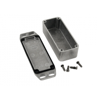

Project template containing the recommended board layout for Hammond Manufacturing 1590TRPB:
Yellow: 1590TRPBYL - HM495-ND
Red: 1590TRPBRD - HM464-ND
Purple: 1590TRPBPR - HM493-ND
Orange: 1590TRPBOR - HM463-ND
Gray: 1590TRPBLG - HM462-ND
Green: 1590TRPBGR - HM461-ND
Blue: 1590TRPBCB - HM460-ND
Black: 1590TRPBBK - HM459-ND
Unpainted: 1590TRPB - HM458-ND
|
|
 |
The "Dwgs.User" layer contains all critical dimmensions in milimeters[inches].
The "Edge.Cuts" layer contains the maximum board outline and holes to align with board standoffs.
PCB Preview: